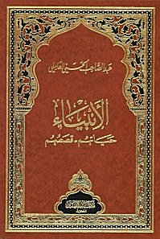

Sacred Texts
Islam

THE PROPHETS, THEIR LIVES AND THEIR STORIES
by Abdul-Sâhib Al-Hasani Al-'âmili
Translator's Word
Facade
Introduction of The Book
Introduction of 2nd Edition
Adam
About some conditions of the father of Human beings ''Adam'' (PUH)
Subjects from different sources with agreement in contents
Angels prostration for Adam PUH
Useful Caution
The Inhabitation of Adam in Paradise
How was it correct to prostrate before Adam by angels and he's just a creation
Some tales related to our research
The reasons for getting Adam down from paradise to earth
What is the tree that was porhibited for Adam PUH
Place of falling of Adam and Eve
Crying of Adam for paradise
Having a tent for them in the place of the Holy house
Of what was the dog created
Marriage of Adam and Eve
The marriage of the children of Adam PUH
Summary of the story of Adam PUH
Enoch
Conditions of Enoch the Prophet PUH
Some of what was mentioned in the books of Enoch PUH
Noah
Sheikh of messengers, Noah PUH
The Ark of Noah and its creation
The coming down of Noah and his fellows from the Ark
A completion with the help of the Holy Quran for the case of Noah
Hud
Hud PUH
The Land of A'ad and Their Crafts
Anti-Critiscism or Imagination
And Here Is An Amazing Story
And Some Historians Said
Sâlih
The Prophet Sâlih (PUH)
Properities of The She-Camel
The Land of Sâlih's (PUH) People
Abraham
Abraham The God's Friend (PUH)
The Infallibility of God's Viceroys
The Birth of Abraham (PUH)
Breaking The Idols and Throwing Abraham in The Fire
Getting Out From Iraq To The Land of Shem
The Books of Abraham (PUH) and Some of What Was Revealed By God to Him
Taking Ishmael (PUH) and His Mother Hagar to The Holy House
Building The Holy House
Some Sentences About Sarah The Wife of Abraham As Told By Historians
Chapters and Phrases That Mentioned Abraham (PUH)
The Trial of Abraham (PUH) to Slay His Son Ishmael (PUH)
A Completion With The Ancestry of The Prophet (PUH)
Isaac
Isaac ben Abraham (PUT)
Lot
The Prophet Lot (PUH)
Some Funny Stories
Some Benefits That Should Not be Left
Presenting His Daughters to The People of His Village and His Wife Conditions
The Wife of Lot (PUH)
Sermons to be Taken From The Story of Abraham and Others Mentioned With Him
Jacob and Joseph
Jacob and Joseph (PUT)
About Calling Jacob as Israel
The Punishment of God for His Viceroys
Joseph The Righteous (PUH)
Gifts Are in Troubles
Getting Joseph Into The Jail
Getting Out From The Jail to The King of Egypt
The Beginning of Easiness For The Household of Jacob (PUH)
Another Tale
Lot of Sermons in The Josephite Virtues
Ðul-Qarnain
Some Conditions of Ðul-Qarnain
Getting Back From West to The East
Other Tales About Gog and Magog and What Ðul-Qarnain Faced
Alexander and Al-Khidhr Were Born in The Same Day
Job
Ayub (Job) The Prophet (PUH)
The Back of Gifts From God to Job (PUH)
Another Story Similar to What Was Mentioned Before
Shu`ayb (Jethro)
Shu`ayb (Jethro) The Prophet (PUH)
Moses
Musa ben `Imrân (Moses ben Amram) (PUH)
The Birth of Moses (PUH)
Going Out of Egypt to Midian
Moses Going Out From Egypt to Midian With Fear
The Marriage of Jethro's Daughter and Moses
Moses' Stick and Its Deeds
Aaron as A Henchman as Moses Requested
Taking Off The Shoes in The Valley of Tuwa
Moses Entering Egypt After Sending Him With His Brother Aaron
The Nine Continuous Miracles by Moses (PUH)
The Miracles of Moses and The Ash`abite Psychology of The Pharaoh
The Ash`abite Imaginations of The Pharaoh
The Pharaoh Wants to Kill Moses and The Believing Man From The Pharaoh Family Defending Him
The Exit of The Israelites From Egypt to Palestine
The Wife of The Pharaoh, Âsiyyah bent Muzâhim
Moses and His People Going Out From The Sea Into The Land
Some Historians Said
Moses Only Wanted to Get Them Into The Holy Lands
The Chieftains and `Iwaj ben `Inâq and what Happened With Them
Revelation of Torah and Worshipping of The Calf and Related Stories
Place of Revelation of Torah
Worshipping The Calf
Qârun (Korah) and What He Was Given and His End
The Story of The Cow
Moses Choosing Seventy Men For God's Appointed Tryst
Al-Khidhr and Moses (PUT)
Moses' Soliloquy With His Lord
The Death of Moses and Aaron (PUT)
Something About Johsua ben Nun
Some Sermons From The Stories of Moses and Aaron (PUT)
Elias, Elisha, Ishmael and Balaam
Some of The Conditions of a Group of Prophets (PUT)
Escaping The Plague
Ishmael, Other Than The Son of Abraham (PUT)
Elias (Elijah) and Alyasa` (Elisha) (PUT)
Some Conditions of Ðul-Kifl (PUH)
David
David (PUH)
The Awaited Manifesto
Climbing Into The Champer and Straying of Sheeps Into The Farm
Some of What Was Inspired to David (PUH) and Some of What Was Copied From His Sermons
Mutation of Israelites
Yunus (Jonah)
Yunus (Jonah) (PUH)
Zacharias and John
Zacharias and John (PUT)
The Death Zacharias and John
Jesus The Son of Mary
Jesus The Son of Mary (PUH)
The Pregnancy of Mary With Jesus And His Birth (PUT)
Jesus is One of Those of Will
The Table And The Mutation Among The Israelites
Some Additions of Narrations About The Messiah, Jesus (PUH)
The Bell
The Uplift of Jesus The Son of Mary Into Heaven
The Injeel (Gospel) is A Heavenly Revealed Book
Gospel of Mark
Gospel of Luke
Gospel of John
Gospel of Barnaba
Bukht Nassar (Nebuchadnezzar)
Dâniâl (Daniel)
Dâniâl (Daniel) (PUH)
`Uzair (Ezra) Iramyâ' (Jeremiah)
`Uzair (Ezra) Iramyâ' (Jeremiah) (PUT)
People of The Cave and The Inscription (Seven Sleepers of Ephesus)
Owners of The Ditch
The Prophet Jerjees (Georgeous)
The Prophet Jerjees (Georgeous) (PUH)
Khâlid ben Sinân Al-`Absi
Sacred Texts
|
Islam
« Previous: The Prophets, Their Lives and Their Stories: Introduction...
Index
Next: The Prophets, Their Lives and Their Stories: Introduction... »